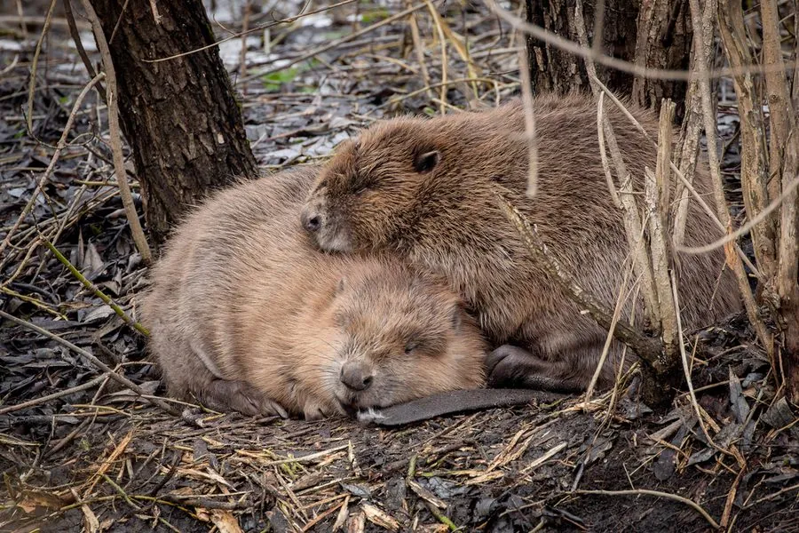

哺乳动物 · 动物界
欧亚河狸 Castor fiber

欧亚大陆最大的啮齿动物，用树枝和泥土筑坝造池塘，尾巴扁平如桨，后足有蹼，因毛皮和河狸香曾被大量捕杀。
- 分类
- 门脊索动物门纲哺乳纲目啮齿目科河狸科属河狸属
- 栖息环境
- 缓流河流、湖泊、湿地与河岸森林
- 地理分布
- 欧洲大部分地区及亚洲西部、北部，中国新疆额尔齐斯河流域
- 保护级别
- IUCN 无危（LC）；中国国家一级保护动物
物种志
欧亚河狸体长 70–100 厘米，尾长 30–40 厘米，体重 18–30 千克，是欧亚大陆最大的啮齿动物。它的毛色为深褐至红棕色，尾巴宽大扁平、覆盖鳞片，后足有蹼，门齿坚硬呈橙黄色，能咬断树干。
欧亚河狸曾广泛分布于欧洲和亚洲的森林河流，因毛皮和河狸香贸易几乎绝迹，后经多国重引入逐渐恢复；在中国仅分布于新疆额尔齐斯河流域。它栖息在缓流河流、湖泊和湿地，用树枝、石块和泥巴筑坝，形成池塘和巢屋，以树皮、嫩枝和水生植物为食。河狸是少数会改造环境的动物，筑坝形成的湿地为鱼类、鸟类提供栖息地。雌性妊娠期约 105–107 天，每胎 2–4 仔，寿命约 15–20 年。欧亚河狸整体被列为无危，中国种群为国家一级保护动物。
形态与习性
- 食性树皮、嫩枝与水生植物
- 体长70–100 cm，尾长 30–40 cm
- 体重18–30 kg
- 寿命15–20 年
- 繁殖妊娠约 105–107 天，每胎 2–4 仔
- 尾巴宽大扁平，覆盖鳞片
趣味知识
- 河狸用树枝、石块和泥巴筑坝，形成池塘和湿地。
- 它的尾巴扁平如桨，后足有蹼，适合水中生活。
- 欧亚河狸曾因毛皮贸易几乎灭绝，多国重引入后恢复。